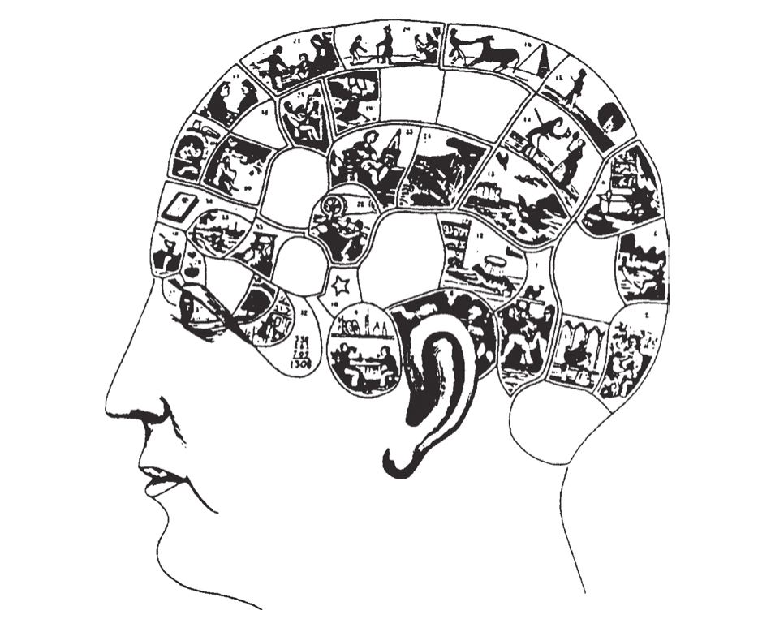
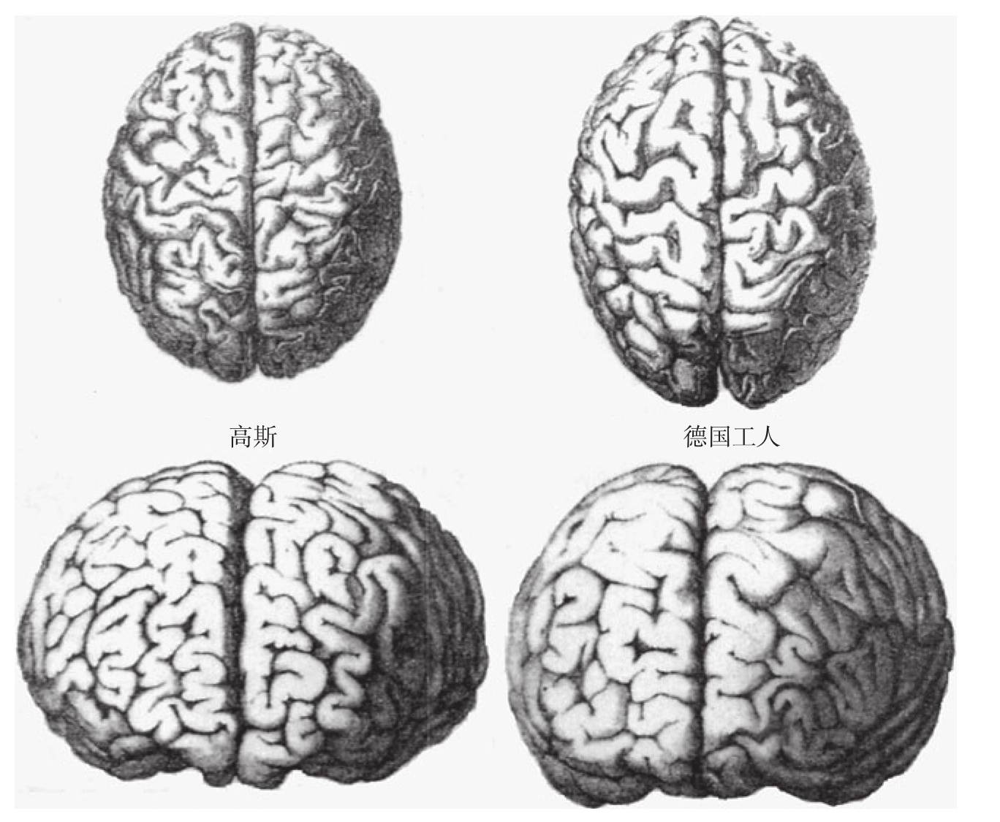

一直以来，科学家对计算奇才都很有兴趣。对他们的天赋进行解释的各种理论不断出现在大众媒体上，许多理论稀奇古怪。其中非常热门的说法有上帝馈赠、先天知识、传心术、轮回等。甚至发明了第一个智力测验的法国著名心理学家阿尔弗雷德·比内（Alfred Binet），也热衷于探求这一现象的合理答案。1894年，在他的一本极具影响力，至今仍然被广泛引用的著作《优秀的计算者和国际象棋手的心理》（The Psychology of Great Calculators and Chess Players）中，他讨论了那个时代最著名的计算天才雅克·伊诺迪（Jacques Inaudi）的经历12。比内“以人们可以想象的最保守的态度”引用了下面这则轶事：
据称，伊诺迪的母亲在怀孕期间经历了心理上的困难时期。她目睹自己的丈夫挥霍家中微薄的财产，并眼看着剩下的钱即将不足以支付快要到期的账单。由于担心财产被查封，她在心里估算自己需要省下多少钱才能避免信誉受损。她变成了一个计算狂，把整日整日的时光都用在了数字上。
比内作为一个认真负责的科学家，尽职地问自己：“这个报道是真的吗？如果是真的，母亲的心理状态真的影响了她的儿子吗？”比内如此严肃地提出这个问题，清楚地表明了法国生物学家拉马克（Lamarck）的获得性遗传理论(18)在1894年仍然十分活跃，尽管达尔文的《物种起源》在1859年就已经出版。
事实上，在19世纪早期，就已经出现了关于智力天赋的科学理论，该理论引发了持续的热议，它就是心理器官的颅相学(19)理论。早在1825年，法国解剖学家弗朗兹-约瑟夫·加尔（Franz-Joseph Gall）就发表了他的“器官学”（organology）理论，后来由约翰·卡斯帕·施普茨海姆（Johann Caspar Spurzheim）命名为“颅相学”。加尔的假设明确肯定了思维与大脑的唯物主义观点，尽管这一观点经常遭到其他学者的嘲笑，但这一假设对许多著名的神经生物学家却产生了深远的影响，其中就包括保罗·布罗卡（Paul Broca）和约翰·休林斯（John Hughlings）。加尔的器官学假设人类大脑可以划分为大量特化的区域，它们组成独立的、先天的“心理器官”。每个器官负责一种既定的心理能力，如繁殖本能、对后代的爱、对事物的记忆、语言本能、对人的记忆，等等。该理论总括阐述了27种能力，在后续的其他版本中，这27种能力被扩展为35种，它们都被分配到特定的脑区，这一过程通常建立在纯粹的想象基础之上。在这一系列心理能力中，“数字关系感”处于前部脑区的众多心理器官之中（见图6-2）。

颅相学家所提出的各种心理器官的高度形象化图像。经常被称为“数学凸起”的“数字关系感”被放置在眼睛的后方。
图6-2 各种心理器官的形象化图像
鉴于心理能力是天生的，如何解释它们的个体差异呢？加尔假设脑器官的相对大小决定了每个人的心理倾向。他推论，在优秀数学家的大脑中，负责数字关系的心理器官的组织大小远高于平均值。然而，皮层无法直接被测量。于是加尔提出了一个简化的假设：颅骨在成长过程中由皮层直接作用而成形，凸起和凹陷直接反映其下心理器官的大小。因此，研究人员可以使用“颅骨测量法”（craniometry）测量童年期头骨的形状，并由此辨别数学天才。在当代法国，关于某人极具数学天赋的一种流行说法是，他有一个“数学凸起”。这一表达直接继承了颅相学的观点。
在加尔理论的影响下，19世纪的学者花费相当大的精力对不同种族、职业和智力水平的人的头骨大小和形状做了比较。斯蒂芬·杰伊·古尔德（Stephen Jay Gould）在《对人的错误测量》（The Mismeasurement of Man）一书中对这段科学史有过生动的描述13。许多著名科学家陷于这种狂热中，并决定在去世后将他们的头颅捐献出去，以便进行科学研究。他们的大脑体积将会在一场可怕的尸检竞争中与他们的同事的，或者与普通人的做比较。法国巴黎人类学会在著名的动物学家和古生物学家乔治·居维叶（Georges Cuvier）身上花费了大量的时间。他的头骨，甚至他的帽子尺寸，都进一步激发了颅骨测量的狂热支持者布罗卡和反对者格拉蒂奥莱（Gratiolet）之间的激烈争论。高斯的大脑似乎支持了布罗卡的观点，它在重量上处于平均水平，却被认为比普通德国工人的大脑有更多的沟回（见图6-3）。布罗卡也强调，比内曾经说过：“年轻的伊诺迪的大脑体积庞大且无规则。”而沙尔科（Charcot）发现了伊诺迪的大脑“右额稍微突出，后部左侧顶叶突出”，以及有“由高起的右顶骨形成的一条细长纵嵴”。所谓黑人、女性和大猩猩的大脑体积较小的说法，被认为是脑的大小和智力紧密相关的另一种证明。所有这些分析都充满了明显的错误，古尔德及其他一些学者曾多次对此进行谴责。

一张来源于19世纪末的绘图显示，比起普通德国工人，数学家高斯的大脑有更多的沟回。这种差异不大可能是真实的，很可能来自建模者的想象和选择性的偏见，而非真正的大脑解剖结构。
图6-3 高斯的大脑与普通人的大脑
一个半世纪以后，颅相学和颅骨测量还留下了什么？尽管来自各个政治层面的一些种族主义者不时地试图恢复它们，但脑的大小和智力之间具有直接联系的假设被一次又一次地驳倒了。加尔自己的脑重量只有1 282克，比居维叶的少了520克。然而加尔的器官学对后世的影响依然存在。事实上，脑区功能的专门化不再是一个有争议的假设。每平方毫米的皮层内包含着专门处理某种特定信息的神经元，这已是一个既定的事实。在之后的章节中我们将会看到，脑损伤研究以及目前正在使用的脑功能成像的新方法，使神经科学家得以描绘出与心算相关的大脑皮层网络的粗略图。
这些研究成果无疑超越了加尔和施普茨海姆的异想天开，但它们的理论定位并不是“心理能力”。与颅相学理论相反，现代脑成像从来没有把诸如语言或计算等复杂的能力精确定位到单一的、具有唯一功能的脑区。在当代的大脑地图中，只有非常基本的功能，包括面部细节的识别、颜色的恒常性或者运动姿势控制才可以被分配到一个狭窄的脑区。像读一个词这种最简单的心理行为，也需要分布在不同大脑区域的众多神经元之间的紧密协调与合作。恕我直言，对于现在仍在执着追求负责意识或利他行为的脑区的研究者来说，分离出语言区是不可能的。同样地，分离出控制抽象思维的专门区域也是不可能的。
加尔还有另一个理论，尽管不是那么成熟，影响却更持久。这个理论假设智力才能源于一种先天的馈赠，即天赋的生理倾向性。1894年，比内认为一种“先天的才能”解释了计算天才的成就。他确定地说：“他们才能的产生是一种自发生成的过程。”14但是，随后对非常有才华但是发育迟滞的儿童进行的研究改变了比内的想法。10年之后，比内否认了智力先天论，特殊教育作为一种补偿发育迟滞的手段得到了他的热心支持。然而，对于一些科学家而言，“先天才能”的概念很难被抹杀。甚至在今天，研究“智障学者”最著名的专家之一尼尔·奥康纳仍然延续了这个观点，他甚至声称“孤独症奇才所表现出来的能力就像与生俱来被设置好的程序，它们不依赖于任何学习而独立运行”。
智力能力由生物因素决定这一信念深深地扎根于西方思想中，尤其是美国。举个例子，心理学家哈罗德·史蒂文森和吉姆·施蒂格勒做了一项研究：美国和日本的父母如何评估后天努力和先天能力对儿童在学校取得的成绩所造成的影响15。在日本，努力的程度和教学质量被认为是影响成绩最关键的因素。然而在美国，大多数父母，甚至儿童自己，都认为在数学上的成功和失败大体上归因于天赋和缺陷。甚至在西方的词汇中，先天论的偏见也很明显。例如，我们把“才能”（talent）称为“天赋”（gift）（谁给的？）或“天性”（disposition）（由谁建立的？）。事实上，“有才能的”（talented）这个词往往被认为是与“努力工作的”（hardworking）相对的。
直到最近，即使是智力先天论的支持者，也在嘲笑加尔过于简单的假设：才能的高低与特定大脑沟回的多少直接成正比。然而，在最近几年里，器官学这一理念在神经科学的前沿研究中出现了东山再起的趋势。发表在权威国际科学杂志中的两篇文章，报告了高水平的音乐能力与特定脑区的异常扩大之间的关联。相比那些不是天才的对照组，有绝对音高的音乐家，无论是否演奏乐器，在他们大脑的左半球听觉皮层中，被称为颞平面（planum temporale）的区域都明显较大16。而那些弦乐演奏者，负责左手手指触觉表征的感觉皮层区域表现出一种异常的扩大17。音乐才能已经能够被定位了吗？
实际上，这类数据未必能支持加尔的理论。大脑的可塑性研究已经揭示了经验能够在很大程度上改变脑区的内在组织形式。人的大脑结构发展持续到青春期之后，是一个渐成（epigenesis）过程，在这个过程中，皮层表征发生了模式化，对有机体有用的功能被选择性地保留下来。因此，自幼每天练习几个小时的小提琴，可能会实质性地改变一个年轻音乐家的神经元网络，以及它们的延伸情况，甚至宏观形态。该理论能较好地解释弦乐演奏者躯体感觉皮层的扩大，开始弹奏乐器时的年龄越小，感觉皮层受到的影响就越大。与此类似的大脑皮层结构的根本性改变，已经在猴子的感觉皮层中被多次观察到18。当代神经科学完全推翻了加尔的假设。颅相学家认为皮层表面对应特定的功能，作为一种先天参数，最终决定了我们的能力水平。而现在的神经科学家则认为，一个人在某一领域付出的时间和努力，决定了该领域表征在皮层中所占据的范围。
许多年前，研究人员对爱因斯坦的大脑所进行的研究引起了媒体的注意。科学家对这个保存在甲醛罐子里的神秘器官进行了多次解剖测量，但结果令人失望，这个极具灵感的现代物理学之父似乎只配备了一个很普通的大脑。例如，它的重量只有1 200克，甚至对于一个老人来说这也并不算大。然而，1985年，在位于爱因斯坦大脑后部顶下小叶，被称为角回或布罗卡39区的区域内，两个研究者发现了高于平均密度的神经胶质细胞19。我们接下来将会看到，这个区域在数量的心理操作过程中起着重要作用。因此，通过它的细胞组织能够区分出爱因斯坦和普通人也不足为奇。那么，导致爱因斯坦卓越成就的生物因素已经被发现了吗？
事实上，正如对音乐家的大脑皮层结构所做的研究一样，这个研究也同样模棱两可。即使假定爱因斯坦的神经胶质细胞密度超过正常人，哪怕这一点还尚未被证实，我们如何才能分辨出哪个是原因，哪个是结果呢？爱因斯坦可能从出生就已经拥有了大量的顶下小叶细胞，这使其更易于学习数学。但是根据我们当前的研究，相反的情况也同样有道理：对这一脑区的频繁使用在很大程度上改变了大脑的神经组织。更具讽刺意味的是，相对论中的生物决定因素将永远迷失在“鸡和蛋”的谜题中。不是有人说过，世间万物都是相对的吗？